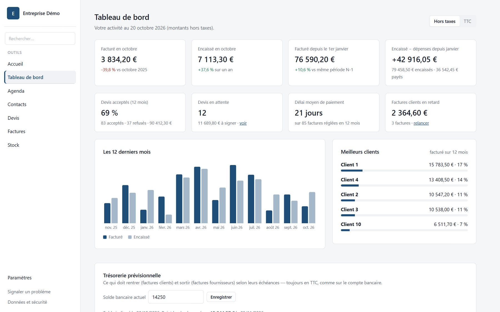
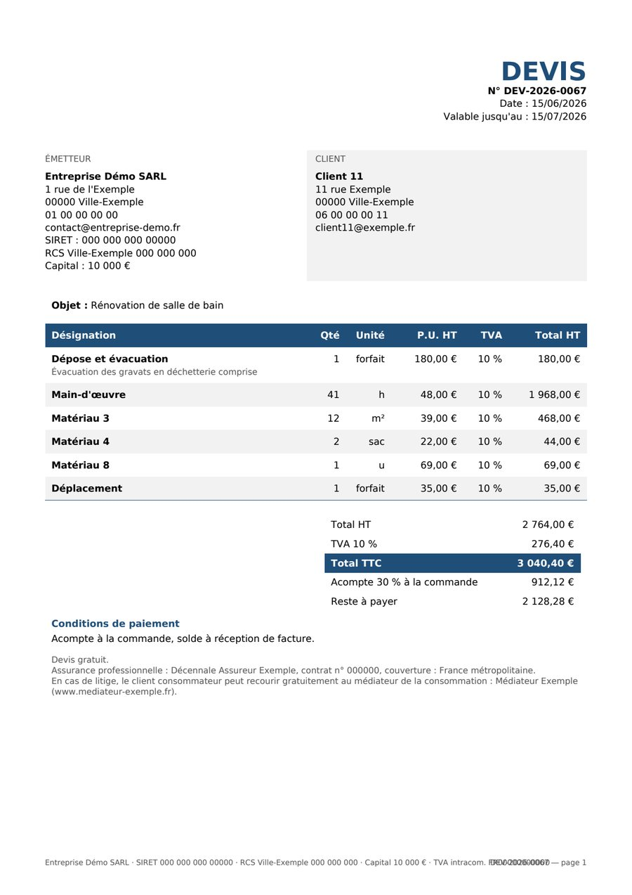
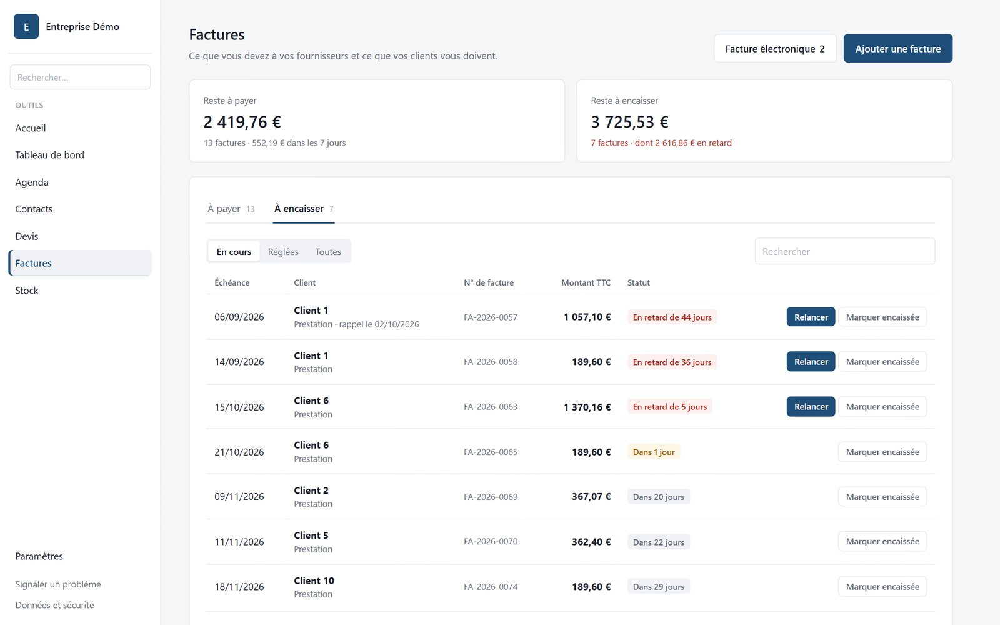
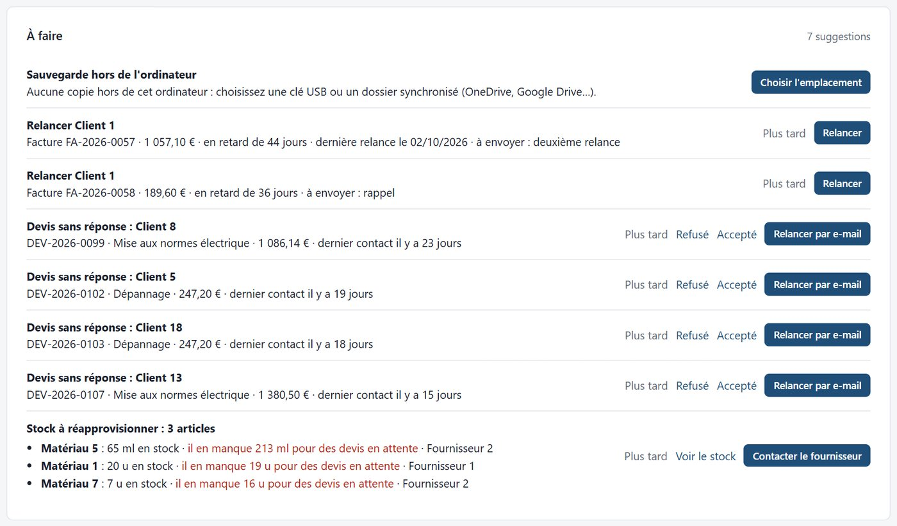
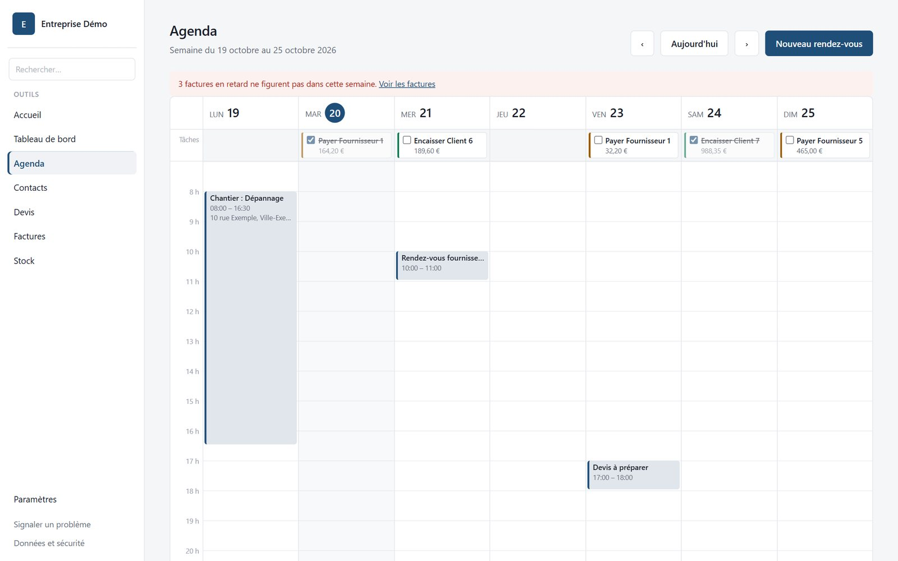
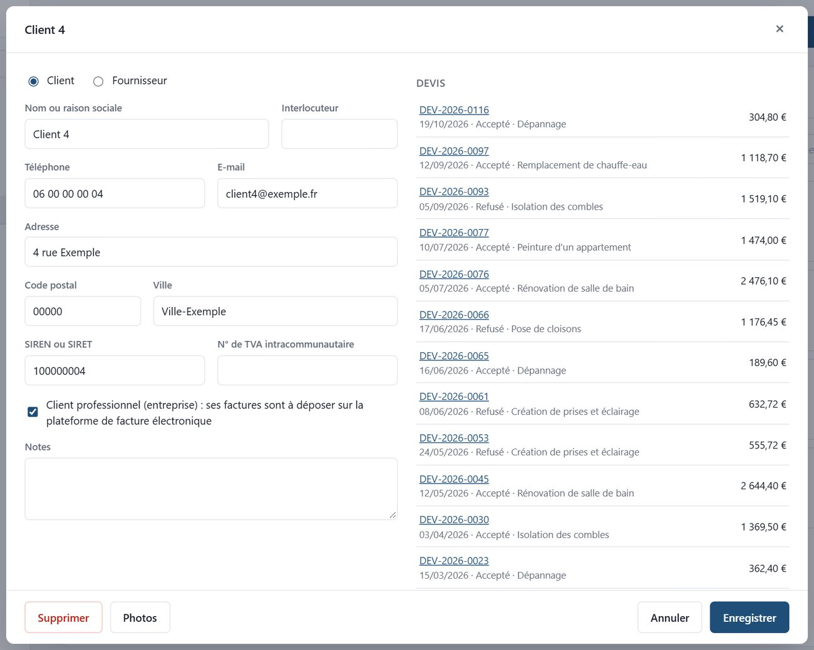
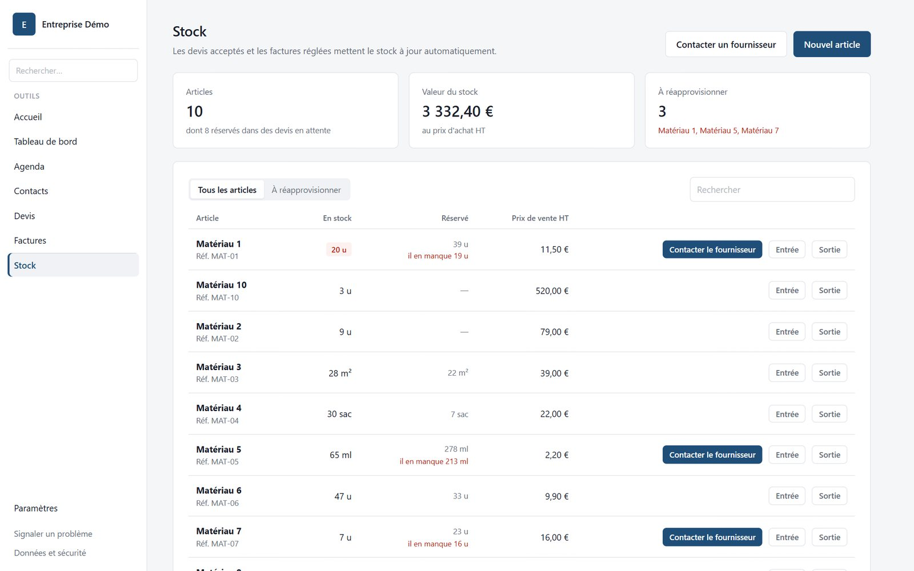
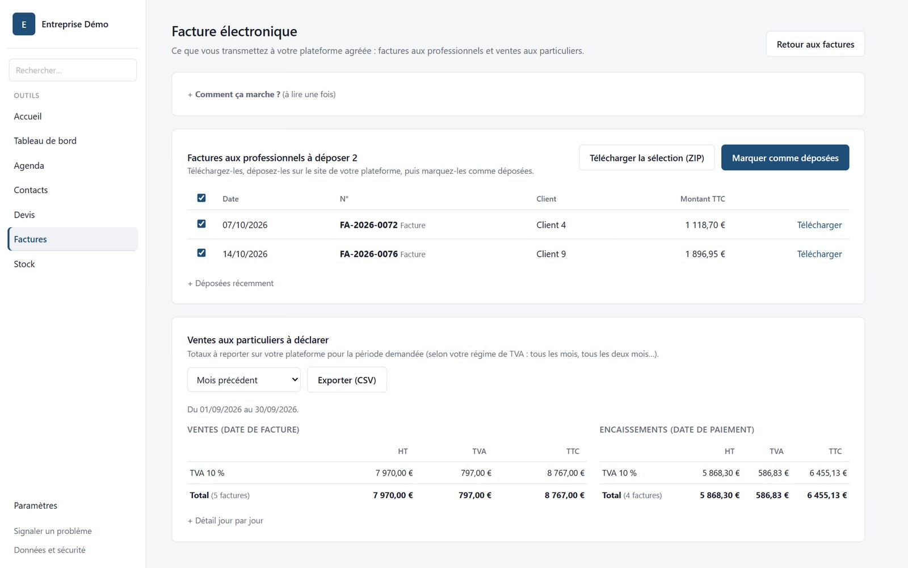

Moins de paperasse, plus de temps pour votre métier.
Le logiciel de devis et de factures des artisans et des petites entreprises.

Pensé pour ceux qui n'aiment pas l'informatique.
Une licence payée une fois, à vous pour toujours.
Tout reste sur votre ordinateur, même sans Internet.
Factures au format électronique officiel Factur-X.
Votre temps est mieux employé dans votre métier que dans la paperasse. GestionPro s'occupe du reste.
Recopier les prix, refaire les calculs, chercher l'ancien devis du même genre…
Un acompte jamais facturé, un solde envoyé en retard : c'est de l'argent qui dort.
Relancer est désagréable, alors on repousse. Et la trésorerie en souffre.
Beaucoup de logiciels se paient chaque mois, pour toujours, et gardent vos données sur Internet.
En 2027, les factures entre entreprises devront passer par une plateforme officielle, au bon format.
Combien j'ai facturé ce mois-ci ? Qui me doit encore de l'argent ? Que restera-t-il sur le compte ?


L'accueil vous dit quoi faire aujourd'hui : factures à relancer, devis restés sans réponse, sauvegarde à mettre en place.
Le tableau de bord montre le facturé et l'encaissé, la comparaison avec l'an dernier, vos meilleurs clients, et votre trésorerie prévue sur 90 jours.


Rendez-vous, chantiers et échéances de factures sur la même semaine.

Remplis automatiquement, avec l'historique complet de chaque client.

Mis à jour par les devis acceptés et les achats, avec alertes de réapprovisionnement.
La réforme arrive pour toutes les entreprises. Avec GestionPro, vos factures sont déjà au bon format.
| 1er septembre 2026 | Toutes les entreprises doivent pouvoir recevoir des factures électroniques, par une plateforme agréée. |
|---|---|
| 1er septembre 2027 | Les petites entreprises doivent émettre leurs factures aux professionnels par cette plateforme, et déclarer leurs ventes aux particuliers. |

Pas de serveur, pas de compte en ligne : votre activité reste sur votre ordinateur.
Personne d'autre, pas même l'éditeur, n'a accès à vos devis et factures.
Une coupure ou un site en panne ne vous bloque jamais.
Chaque jour, avec une copie possible sur clé USB ou OneDrive.
Facultatif, avec un code de secours en cas d'oubli.
Une sauvegarde suffit pour tout retrouver.
Ni modifiables ni supprimables : vous restez en règle pour 10 ans.
Vous payez une fois, le logiciel est à vous.
| GestionPro | Logiciel en ligne par abonnement | |
|---|---|---|
| Paiement | Une seule fois | Chaque mois, tant que vous l'utilisez |
| Vos données | Sur votre ordinateur | Sur les serveurs de l'éditeur |
| Sans Internet | Fonctionne normalement | En général inaccessible |
| Si vous arrêtez de payer | Rien ne change, le logiciel reste à vous | En général, accès coupé ou limité |
| Facture électronique 2027 | Format Factur-X inclus | Selon l'offre choisie |
Le logiciel s'active avec la clé de licence que vous recevez après l'achat.
Windows 10 ou 11 · environ 27 Mo · installation en cinq minutes.
Télécharger l'installateurUne démonstration de quelques minutes, avec vos propres exemples de devis.
Écrire directement depuis :